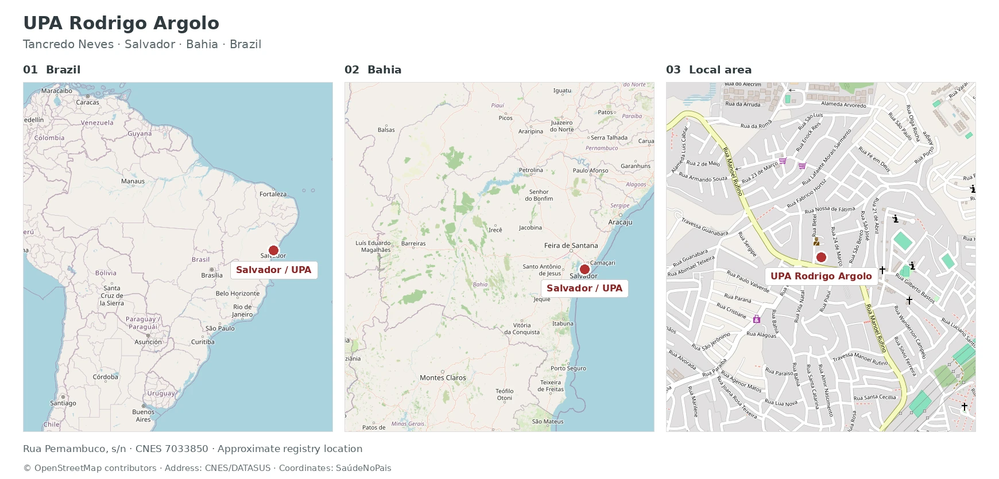

Urgent care ECGs · InCor · 2026
Gorgona
ECG classification integrated into urgent care
Heart Institute (InCor), Hospital das Clínicas, University of São Paulo Medical School
Objective
Gorgona sends a Telegram alert to the team coordinating referrals when an ECG suggests myocardial infarction. The ECG also goes through the usual telemedicine review. The aim is to give the team an earlier warning. Clinicians assess the patient and decide what to do next.
My work
I led the project and connected the model to the Windows app, InCor server, dashboard and Telegram in the initial implementation. The clinical team defined the care protocol and reviewed the ECGs.

Deployment location
We deployed the system at UPA Rodrigo Argolo, an urgent care unit in the Tancredo Neves neighborhood of Salvador. ECGs are recorded at the unit and analyzed on the InCor server.

How it works
Previous workflow
Staff sent ECGs to the telemedicine service manually. After the report and clinical assessment, they could contact the referral coordination team on Telegram. If clinical suspicion was high, the physician at the unit could contact the group directly.
With Gorgona
The app monitors the ECG folder and sends new files to InCor for classification. When the probability assigned to the Current of Injury class exceeds 50%, it sends a Telegram alert to the referral coordination team.
| Stage | Previous workflow | With Gorgona |
|---|---|---|
| Collection | Manual telemedicine submission | Automatic folder monitoring |
| Analysis | Medical review and report | Additional AI classification |
| Communication | Staff-initiated contact | Automated Telegram alert |
| Decision | Medical and coordination teams | Medical and coordination teams |
Windows client, server and online platform
The app at the urgent care unit
The ECG-IA Client monitors a Windows folder and queues new ECGs for upload. Each installation has its own credentials. Staff can use the system tray menu to configure or restart the app, or upload files again.


Server and online platform
A FastAPI endpoint receives the ECG, reads its metadata and converts the waveform to an image when needed. Class labels and probabilities are stored in SQLite. The dashboard shows results and the status of connected clients, while the Telegram integration sends alerts.

Data protection and LGPD
The client can anonymize files on the unit's computer before upload. Transfers use HTTPS, with credentials for each installation and role-based access. These controls alone don't establish full compliance with Brazil's LGPD.
The dashboard filters results by unit, period, status and class.

Results and evaluation
Case study
This case was recorded on May 20, 2026, at UPA Rodrigo Argolo. The patient was admitted at 18:52 and had two ECGs, each triggering an alert 2 minutes later. Arrival at the referral center was recorded at 20:44.

| Event | First ECG | Second ECG |
|---|---|---|
| ECG recorded | 19:15 | 19:37 |
| AI alert | 19:17 | 19:39 |
| Received by telemedicine | 19:21 | 19:39 |
| Report issued | 19:58 | 20:04 |
| ECG to alert | 2 min | 2 min |
| Time before report | 41 min | 25 min |
The first alert arrived 4 minutes before the ECG reached the telemedicine service. The two alerts preceded the reports by 41 and 25 minutes. The coordination team received the information sooner, but this single case doesn't establish whether AI improved treatment times or outcomes.
Classification model
Gorgona builds on the AIMED model. I led the team in the 2024 PhysioNet Challenge, where we won the classification task. The CinC 2024 paper describes ECG pretraining and the ConvNeXt ensemble. My thesis covers the image datasets, experiments and clinical evaluation in more detail.
The classifier uses a ConvNeXt ensemble to identify 12 categories. In a study of 18,519 ECGs from 14,402 patients, annotated by 19 cardiologists, it achieved a macro F1 of 0.807 on the held-out test set (95% CI: 0.788–0.825).
Related papers
- Dias FM, Ribeiro E, Soares QB, Krieger JE, Gutierrez MA. Image-Based Electrocardiogram Classification Using Pre-trained ConvNext. Computing in Cardiology, 2024.
- Dias FM. Classificação automatizada de imagens de eletrocardiogramas por aprendizado profundo. Universidade de São Paulo · Tese de doutorado, 2025.
- Dias FM et al. Image-based deep learning for emergency electrocardiogram classification. medRxiv · Preprint, 2026.
- Dias FM et al. Artificial Intelligence-Driven Screening System for Rapid Image-Based Classification of 12-Lead ECG Exams: A Promising Solution for Emergency Room Prioritization. IEEE Access, 2023.